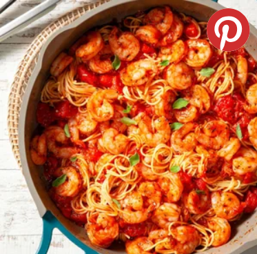

Home
Creamy Garlic Shrimp Pasta

Description:
A rich and creamy shrimp pasta dish with a garlic-infused sauce.
Prep Time: 10 mins, Cook Time: 25 mins, Total Time: 35 mins
Cuisine: Italian
Keyword: pasta, shrimp, creamy garlic sauce
Servings: 4
Ingredients
For Creamy Garlic Sauce
- 2 tbsp butter
- 4 cloves garlic (minced)
- 1 cup heavy cream
- 1/2 cup grated Parmesan cheese
- Salt and pepper (to taste)
For Pasta
- 8 oz fettuccine pasta
- 1/2 lb shrimp (peeled and deveined)
- 1/2 tsp red pepper flakes
- 2 tbsp olive oil
- 1/2 cup chicken broth
- 2 tbsp parsley (chopped)
Steps
For Creamy Garlic Sauce
- Melt butter in a pan over medium heat. Add garlic and sauté until fragrant.
- Pour in heavy cream and stir constantly for 2 minutes.
- Mix in Parmesan cheese, then season with salt and pepper.
For Pasta
- Cook pasta according to package instructions; drain and set aside.
- Heat olive oil in a pan, add shrimp, and cook until pink.
- Add red pepper flakes and stir.
- Pour in chicken broth and let it simmer for 2 minutes.
- Add cooked pasta and mix with the creamy garlic sauce.
- Garnish with chopped parsley before serving.